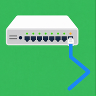

Support
Network On
Questions, feedback or a mistake in a lesson or question? Write to abbashoseiny700@gmail.com. Content corrections are especially welcome: please name the curriculum, the topic number and the question or lesson text.
Frequently asked
Does the app need an account or an internet connection?
No. Everything works offline and there is no account.
How do I switch between CCNA and Network+?
Home tab → gear icon → Curriculum. Progress is kept separately for each curriculum.
How do I change the language of the explanations?
Home tab → gear icon → Content language (English, German, Persian). In a lesson you can also switch with DE / EN / FA at the top.
The simulator says "% Invalid input detected"
That is the real IOS message: the command is not valid in the current mode or is misspelt. Type ? to see what is available here, or use the ⇥ key to complete a word.
Can I delete my progress?
Yes: Home tab → gear icon → Reset progress.
Deutsch
Fragen, Rückmeldungen oder ein Fehler in einer Lektion oder Frage? Schreib an abbashoseiny700@gmail.com. Korrekturen zu Inhalten sind besonders willkommen: bitte Lehrplan, Themennummer und den Text der Frage oder Lektion nennen.
Lehrplan wechseln: Start-Tab → Zahnrad → Lehrplan. Sprache der Inhalte: Start-Tab → Zahnrad → Sprache der Inhalte. Lernstand löschen: Start-Tab → Zahnrad → Lernstand zurücksetzen.